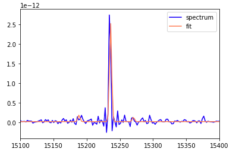

Fit Single Spectrum¶
In this example, we will extract a region of NGC6946 and fit is using LUCI. This is a very basic example.
You can download the example data using the following command:
wget -0 NGC6946_SN3 https://ws.cadc-ccda.hia-iha.nrc-cnrc.gc.ca/data/pub/CFHT/2307000z.hdf5?RUNID=xc9le6u8llecp7fp
# Imports
import sys
sys.path.insert(0, '/media/carterrhea/carterrhea/SIGNALS/LUCI/') # Location of Luci
from LuciBase import Luci
import LUCI.LuciPlotting as lplt
We now will set the required parameters. We are also going to be using our machine learning algorithm to get the initial guesses.
#Set Parameters
# Using Machine Learning Algorithm for Initial Guess
Luci_path = '/home/carterrhea/Documents/LUCI/'
cube_dir = '/home/carterrhea/Documents/LUCI_test' # Path to data cube
cube_name = 'NGC6946_SN3' # don't add .hdf5 extension
object_name = 'NGC6946'
redshift = 0.000133
resolution = 1000 # The actual resolution is 400, but we don't have machine learning algorithms for that resolution, so we use 1000
We intialize our LUCI object
# Create Luci object
cube = Luci(Luci_path, cube_dir+'/'+cube_name, cube_dir, object_name, redshift, resolution)
The output will look something like this:

Let’s extract a background region and take a look at it. The background region is defined in a ds9 region file called bkg.reg.
bkg_axis, bkg_sky = cube.extract_spectrum_region(cube_dir+'/bkg.reg', mean=True) # We use mean=True to take the mean of the emission in the region instead of the sum
Now we can define our fit region and fit it!
# Fit!
axis, sky, fit_dict = cube.fit_spectrum_region(
['NII6548', 'Halpha', 'NII6583', 'SII6716', 'SII6731'],
'gaussian',
[1,1,1,1,1], [1,1,1,1,1],
region=cube_dir+'/reg1.reg', bkg=bkg_sky)
plt.plot(axis, sky, color='blue', label='spectrum')
plt.plot(fit_dict['fit_axis'], fit_dict['fit_vector'], color='coral', label='fit')
plt.legend()
And let’s see how this looks
